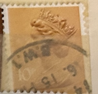
| SOURCE | TITLE| IMAGE MATCH | click to source page |
| Mercari | Antique 1924 Zowie Automatic Hone Strop/ | Mercari | 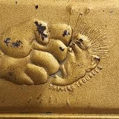 |
| Amazon.ca | EMBOSSED WOOD APPLIQUE / ONLAY # 636 5/8 X 1 1/4 : Amazon.ca: Tools & Home Improvement | 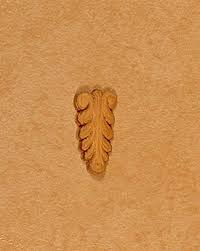 |
| eBay | Vintage 9” Rubber Spin Casting Mold Belt Buckles Crucifix Pendant Sarah Coventry | eBay | 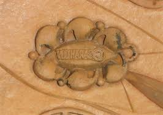 |
| eBay | Vintage 9” Rubber Spin Casting Mold Tree Leaf Leaves Maple Pins Earrings Charms | eBay | 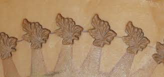 |
| APMEX | 1948 Vatican City Pope Pius XII Gold 100 Lire 5-Coin Set BU | 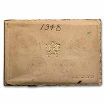 |
| WordPress.com | THISTLES | Words on Stone | 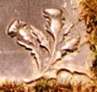 |
| 1stDibs | 18th Century French Louis XVI Musical Trophy Boiserie Panel in Carved Oak Frame For Sale at 1stDibs | 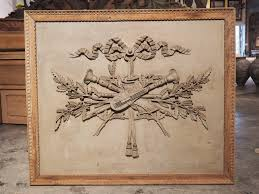 |
| Amazon.com | Amazon.com: Tandy Leather L950 Craftool Right Oak Leaf Stamp 6950-00 | 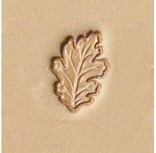 |
| eBay | Tandy Leather CRAFTOOL Stamping Tool - LEAF - L950 | eBay | 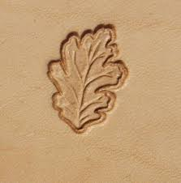 |
| springerlecookiemold.com | AP 2319 Pomegranate with Rosette springerle cookie mold by Anis-Paradies | springerlecookiemold | 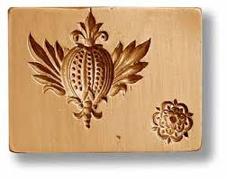 |
| Etsy | 1850-1900's Sand Majolica Barbotine-style 8" Mustard Yellow Urn Vase - Rare and Pretty! - Etsy | 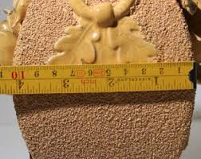 |
| IG Stamps | EN11b 44p Type I Ribbon DLR - Gravure with White Borders England Regional Stamps | 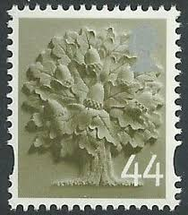 |
| eBay | Makkum Pottery 1776 1976 Bicentennial The First Salute Dutch Framed Tile | eBay | 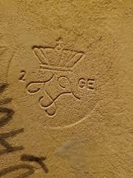 |
| eBay | Atq ROYAL DOULTON LAMBETH Stoneware Relief FARMING SCENE 5 3/4"h Pitcher Jug | eBay | 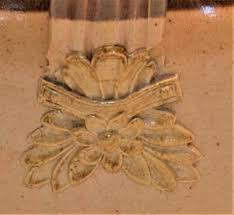 |
| kwality-icecream.us | 18th Century French Louis XVI Musical Trophy Boiserie Panel in Carved Oak Frame | 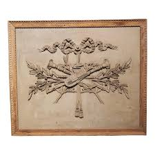 |
| Pro Leather Carvers | F925 Figure Carving Leather Stamping Tool | Pro Leather Carvers | 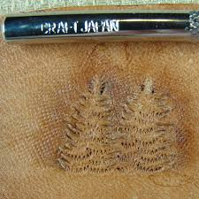 |
| norphil.co.uk | Norvic Philatelics Blog: More new Machin and Country definitive stamps - tariff and other variants | 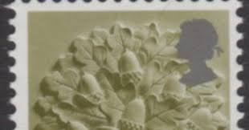 |
| eBay | Vintage 9” Rubber Spin Casting Mold Floral And Patterned Hair Berets Clips Picks | eBay | 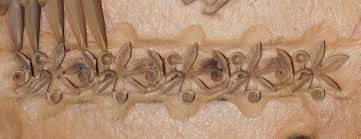 |
| Mernick Brothers | Who made it? | 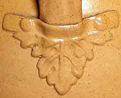 |
| eBay UK | Vintage 9” Rubber Spin Casting Mold Tree Leaf Leaves Maple Pins Earrings Charms | eBay UK | 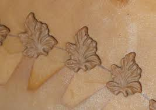 |
| Antiqon | Gold watch with bracelet Zarya 583 USSR 1956-1960. - Antiqon Marketplace | 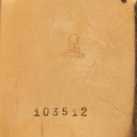 |
| Invaluable.com | Sold at Auction: ANTIQUE RUSSIAN FABERGE GILT SILVER CIGARETTE CASE | 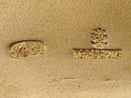 |
| aaa-certificacion.com | Vintage Majolica French Sarreguemines Fruit Pastry Plate. 12" round. EUC | 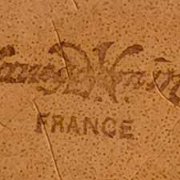 |
| What are the best rotary bits for foam carving? | 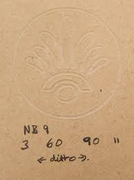 | |
| eBay | Vintage Embossed Mount Rushmore Memorial Hinged Souvenir Box GuildCraft | eBay | 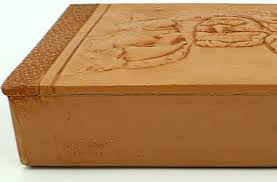 |
| eBay | Leather Stamping Tools - 4-Piece Background Stamp Set | eBay | 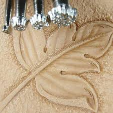 |
| Etsy | 2 Vintage German Flocked Brown Molded Tropical Fruit Millinery Flower Pad Ladies Hat Cloche Flapper Bonnet French Edwardian Corsage Trim - Etsy | 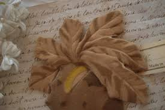 |
| eBay | Old folkart carved wood panel fruit motif Pine panel very unique! | eBay | 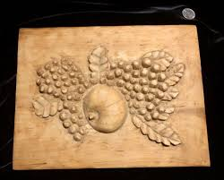 |
| Numismondo | HINDIA BELANDA - NETHERLANDS EAST INDIES Private Paper Money, 1899 | 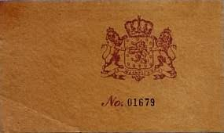 |
| Arthouse Hejtmánek | TALAŠKINO - A BOX - Lot 41 | EVENING AUCTION 2018 | Exhibitions and auctions | Arthouse Hejtmánek | 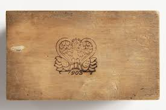 |
| eBay | Alice Cranston Fenner "Gramps" Tile 1940s | eBay | 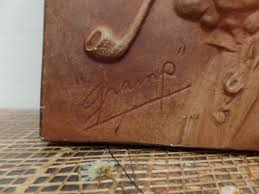 |
| eBay | Vintage HOBO Wooden "Greetings From" Canoe Embossed JWN & Co RI Postcard Rare | eBay | 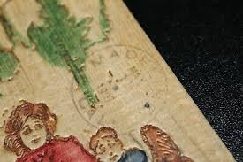 |
| leatherhouse.eu | Stamp L930 - L Stamps - Leather House - Fur, Buckles, leathercraft, tools | 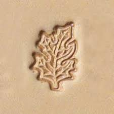 |
| Leather Stamps Tools | Tool for leather craft. Stamp 88-2. Size 14x22 mm | 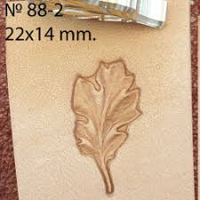 |
| eBay | Antique MINERVA German Baby Blue Eyed Girl Toy Doll! Early Thin Hard Plastic | eBay | 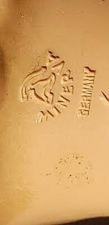 |
| eBay | Exceptional Antique 1885 Mini Friendship Album Period Ephemera - Quality Book | eBay | 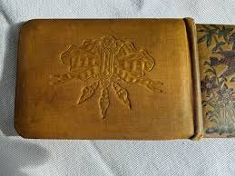 |
| Oak Leaf | 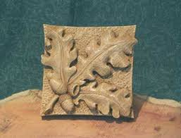 | |
| eBay | 1950 Catholic Holy Year Jubilee Book Slip Embossed Vatican Papal Coat of Arms | eBay | 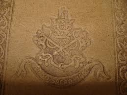 |
| eBay | Antique Porringer Tastevin Wine Tasting Cup Bowl Dish Made In France Early marke | eBay | 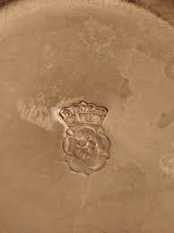 |
| eBay | Vtg Garden Flower Stencils No. 12 1970s Set Of 7 Seven Cardboard In Original Box | eBay | 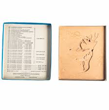 |
| Amazon.com | Amazon.com: Acorn Leather Crafting Stamp Tool for Leather Crafts Brass #88-2 | 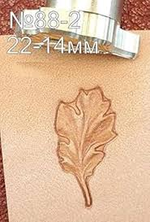 |
| WorthPoint | original RARE cdv CONFEDERATE NAVY OFFICER sailor, csa, tinype, BLOCKADE RUNNER! | #1796180455 | 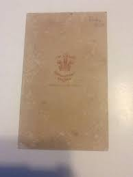 |
| eBay | India vintage CELLULOID greeting card A HAPPY TIME | eBay | 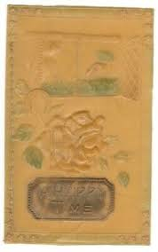 |
| Classmates.com | 1949 yearbook from South San Francisco High School from South san francisco, California | 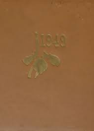 |
| eBay | Flower Basket Press Mold on Wood SPRINGERLE COOKIE MOLD Reproduction #K | eBay | 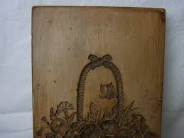 |
| Many thanks for letting me join the group.. I'm a wood artist from Duns in the borders .. thought I'd share the last Scots themed piece I carved.. | 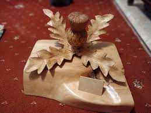 | |
| StecksStore.com | Camping Log Leather Craft Stamp F115 3/4" Long by 1/4" Tall - Stecksstore | 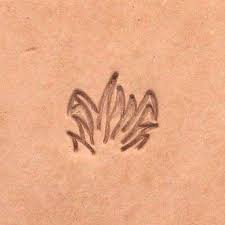 |
| eBay | BEAUTIFUL THISTLE Stamp Set BEAUTIFUL THISTLE Dies Stampin Up Strength J23 | eBay | 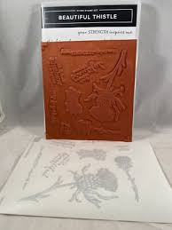 |
| Etsy | Kotobuki Vintage Cast Iron Box Pinecone Gold Japan - Etsy | 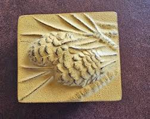 |
| eBay | Japanese Cucumber Turnip Vegetable Cake Mold 19 Century Hand Curbed M010 | eBay | |
| eBay | VINTAGE 1950's MULTI-PRODUCTS INC FAUX WOOD LOOK LEAF BOWL NATURE FALL DECOR | eBay | |
| eBay | Original WW I Austro-Hungarian Collectibles | eBay | |
| eBay | Stencil Tulip Basket, Annette Watkins, Primitive, Folk,(B89) Combined Ship Deals | eBay | |
| Coins and Canada | Coins and Canada - Colonial and pre-confederation tokens | |
| Etsy | Edwardian Book of Shakespeare in German, Circa 1900, Art Nouveau Design, Old English Typeset, Well Worn, Well Loved, Great Find - Etsy | |
| AbeBooks | Historical Records of the XXX. Regiment: Good Hard Cover (1887) First Edition. | Anchor Books | |
| Etsy | Vintage 1960s Tooled Leather Memo Book Cover: Owl Design - Etsy | |
| eBay | c1907 Leather Postcard, Barefoot Boy & Terrier Dog, Hitting the Pipe, Smoking | eBay | |
| HipStamp | Genuine Scott #U263 Used 1884 Brown on Fawn Large Plimpton-Morgan CUT Square | United States, Postal Stationery Stamp / HipStamp | |
| Discogs | Chatterton (3) Discography: Vinyl, CDs, & More | Discogs |